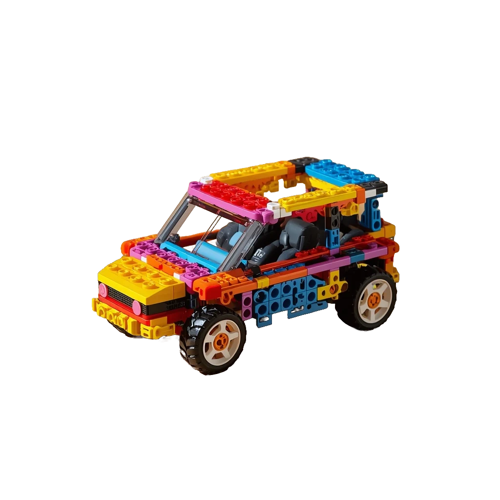
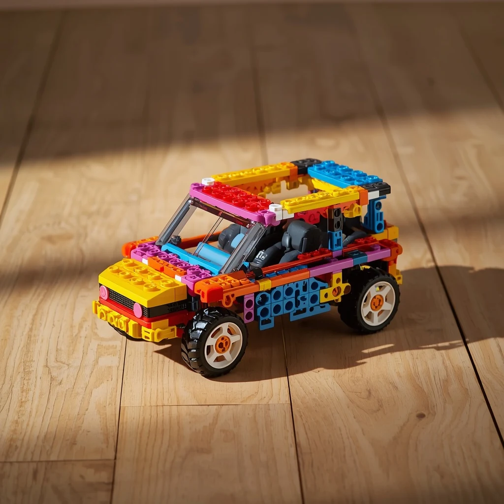

No limits, no watermark, and not a single photo uploaded to the internet. The AI runs on your own computer.
Windows 10 and 11 (64-bit) · no installation · ~170 MB, AI included


Drag to compare. Real Desfundo results on illustrative product images.
Privacy
Not to the cloud, not to a server, not even to us. The AI runs entirely inside your PC. That is why Desfundo works even with the internet turned off.
Desfundo
No uploads. No copies anywhere. What is yours stays with you.
Online background removers
Your photo is uploaded and the result is downloaded back. Meanwhile it sits on a computer you do not control, under privacy rules you did not write.
Photos of launches, prototypes and new collections do not leak early.
Images with models, customers or documents never pass through third parties. Less risk under privacy laws like the GDPR.
The app asks for no sign-up, collects no usage data and shows no ads. There is nothing about you to leak.
The code is open: anyone can check that there is no hidden image upload.
Turn off Wi-Fi or unplug the network cable, open Desfundo and remove the background from your photos. It works the same. A program that needed to upload your images could not.
Online tools charge per photo, reduce the resolution and receive your images on their servers. Desfundo does the opposite.
No photo limit, no watermark, no credits and no subscription. There is no "Pro" version.
All processing happens on your computer. No image is sent to any server, not even ours.
AGPL-3.0 license. Anyone can read the code and check it does exactly what it promises.
The AI ships inside the app. Once downloaded, it works on a plane, at a trade fair or on a bad connection.
You download the app once. After that, each photo uses zero internet: no upload, no download.
Drop as many photos as you like. Download finished ones, one by one or as a ZIP, while the rest of the queue keeps going.
Drop a PDF: each page becomes a photo in the queue, ready to cut out.
Photos come out the same size they went in. No "free low-resolution version".
Automatic edge touch-up, anti-glare for plastic packaging and a brush to erase or restore details.
Rotation, mirroring, brightness, contrast, trimming empty areas and a transparent, white or black background.
It does not ask for an e-mail, show ads or track what you do.
A single file, no installation. It uses every CPU core and the screen never freezes while processing.
With online services, every photo is uploaded and the result downloaded back. With Desfundo, once the app is downloaded, nothing travels.
Less traffic, less infrastructure. Your photos don't travel across the internet, and no cloud server runs just to process them: the computer you already use does the work.
Estimate: counts uploading the original photo and downloading a result of similar size. Actual values vary by service and format.
Compared with the most common kind of online background remover.
| Desfundo | Typical online services | |
|---|---|---|
| Your photos go to a server | Never | Yes |
| Free plan limits | Unlimited, original resolution | A few credits or reduced resolution |
| Watermark | Never | Common on free plans |
| Sign-up | Not needed | Usually required |
| Works without internet | Yes | No |
| Internet used per photo | Zero | Upload + download |
| Open source | Yes, AGPL-3.0 | Rarely |
| Cost | Free | Subscription or credits |
Three steps, no sign-up and no setup.
Download the Windows file and open it. Nothing to install.
Drag in as many photos as you want, or a PDF catalog, and click "Remove backgrounds". The app opens in English or Portuguese, following your Windows language.
Touch up what you need and download as a transparent PNG, on a white or black background, or everything as a ZIP.
Desfundo is and will stay free. If it saved you time or money, please consider supporting its development. Any amount helps.
Support Desfundo once or monthly. GitHub charges no fees on personal sponsorships.
Está no Brasil? Doe com Pix ou PayPal em reais.
Star the project on GitHub, recommend Desfundo to anyone who sells online, or report a problem.
There is no catch. Desfundo is free software with no paid plan, no ads and no data collection. The project is sustained by voluntary donations.
No. All processing happens on your computer, and the app even works without internet. Since the code is open, anyone can verify this.
The warning appears because the executable does not have a paid code-signing certificate yet, not because something is wrong. Click "More info" and then "Run anyway". If you prefer, review the source code on GitHub first.
Yes. The images you create are yours to use for any purpose, including commercial use. The AGPL-3.0 license applies to the program's code, not to your photos.
For now, only on 64-bit Windows 10 and 11.
Because the AI model ships inside the app. That is what lets it work offline without using internet for each photo.
Any PC with 64-bit Windows 10 or 11. More CPU cores make processing faster. We recommend 8 GB of RAM for large batches.